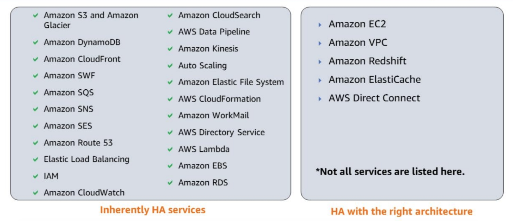
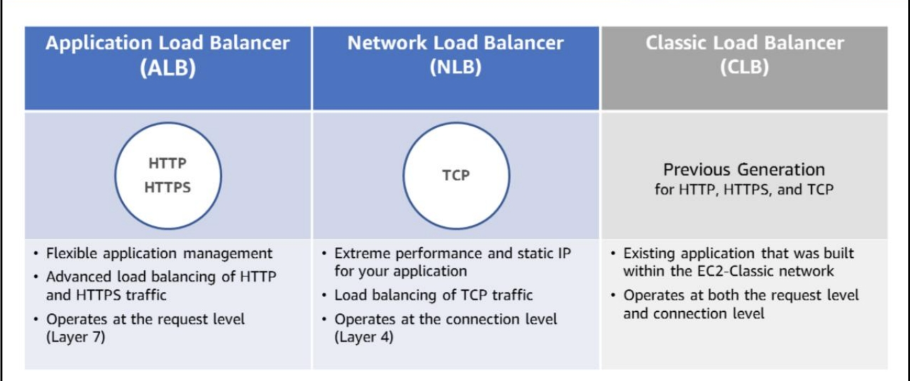

Avoid Single Point of Failure
If two application servers use the same database server, that database server is the single point of failure. A common solution is to have a secondary database.
Notice that when the main database goes offline, the application servers need to automatically send their requests to the secondary database. This goes back to High Availability Best Practice #2: treat resources as disposable, and design your applications to support changes in hardware.
Implement redundancy where possible to prevent single failures.
Not neccessarily duplicated components. You can use automated solutions that only launch when needed, or a managed service where AWS automatically replaces malfunctioning underlying hardware for you
High Availability Factors
Fault tolerance, recoverability, and scalability are three primary factors that determine the overall availability of your application.
Fault Tolerance
The built-in redundancy of an application’s components
Recoverability
The process, policies, and procedures related to restoring service after a catastrophic event.
Scalability
The ability of an application to accommodate growth without changing design.
AWS Services and HA
Route 53 is one of our only services that has a 100% availability service-level agreement.
AWS RDS, CloudFront, EBS, ELB are inherently highly available
- You can make Amazon Elastic Compute Cloud—or Amazon EC2—highly available by having two or more Amazon EC2 instances or placing Amazon EC2 instances in an Auto Scaling group.
- With Amazon Redshift, you can set up the clusters and have a copy so that if something happens to one of the nodes, the service could be started from somewhere else.
- For AWS Direct Connect, you can either have two direct connections, or use VPN as a backup.
Elastic Load Balancing
Three types of ELB:
ALB
- Content-based routing
- WebSocket, HTTP, HTTPS
- Containers or EC2 instances
- Advanced request routing, supports microservices and container-based applications
- Sticky sessions are a mechanism to route requests from the same client to the same target. Application Load Balancer supports sticky sessions using load balancer generated cookies. If you enable sticky sessions, the same target receives the request and can use the cookie to recover the session context. Stickiness is defined at a target group level.
NLB
- high throughput
- ultra low latency
- route connections based on IP protocol data
- optimized to handle sudden and volatile traffic patterns, while using a single static IP address per Availability Zone
- Network Load Balancer can now distribute requests regardless of Availability Zone with the support of cross-zone load balancing.
Sticky Cookie
By default, a load balancer routes each request independently to the application instance with the smallest load. However, you can use sticky session features—which is also known as session affinity—that enable the load balancer to bind a user’s session to a specific application instance.
This takes the responsibility of maintaining sessions from the server instance to the load balancer.
Elastic IP address
Elastic IP addresses are very important because they allow us to mask the failure of an instance or software by allowing users and clients to use the same IP address with replacement resources.
High availability with the right architecture.
- you can make Amazon Elastic Compute Cloud—or Amazon EC2—highly available by having two or more Amazon EC2 instances or placing Amazon EC2 instances in an Auto Scaling group.
- With Amazon Redshift, you can set up the clusters and have a copy so that if something happens to one of the nodes, the service could be started from somewhere else.
- For AWS Direct Connect, you can either have two direct connections, or use VPN as a backup.
- Direct Connect (DX) and Hardware virtual network (VPN) use virtual private gateway in an Amazon VPC.
- Direct Connection(DX) is highly available when there are two ports open.
- DX also allows for a connection from remote servers to the AWS cloud at any time.
ELB Connection Draining – Remove Instances From Service With Care
You can use Elastic Load Balancing on its own, or in conjunction with Auto Scaling. When combined, the two features allow you to create a system that automatically adds and removes EC2 instances in response to changing load.
In order to provide a first-class use experience, you’d like to avoid breaking open network connections while taking an instance out of service, updating its software, or replacing it with a fresh instance that contains updated software. Imagine each broken connection as a half-drawn web page, an aborted file download, or a failed web service call, each of which results in an unhappy user or customer.
You can now avoid this situation by enabling the new Connection Draining feature for your Elastic Load Balancers.
Connection Draining is enabled by default for load balancers that are created using the Console.
When Connection Draining is enabled and configured, the process of deregistering an instance from an Elastic Load Balancer gains an additional step. For the duration of the configured timeout, the load balancer will allow existing, in-flight requests made to an instance to complete, but it will not send any new requests to the instance. During this time, the API will report the status of the instance as InService, along with a message stating that “Instance deregistration currently in progress.” Once the timeout is reached, any remaining connections will be forcibly closed.
RDS scaling
With scaling on RDS you can:
- Scale up/down with resizable instance types
- Scale storage up with a few clicks or via the API
- Easy conversion from standard to Provisioned IOPS storage
- Offload read traffic to Read Replicas to increase read performance
Putting a cache in front of Amazon RDS
- ElastiCache for Memcached or Redis
- Your preferred cache solution, self-managed on EC2
Scaling Amazon RDS Writes with Database Sharding
Sharding is a technique for improving the performance of writing with multiple database servers. Fundamentally, sharding is when you prepare databases with identical structures, and divide them—using appropriate table columns as keys—to distribute writing processes.
Horizontal scaling with Read Replicas
Autoscaling considerations
- Avoid thrashing
- scale out easily
- scale in slowly
- Use lifecycle hooks: Define lifecycle hooks to perform custom actions when Auto Scaling launches or terminates instances.
- Stateful applications require additional automatic configuration of instances that are launched into Auto Scaling groups. Remember that instances can take several minutes after launch before they are fully usable.
EC2 Auto Recovery
If you need identical number of instances, you can use EC2 Auto Recovery instead of ASG.